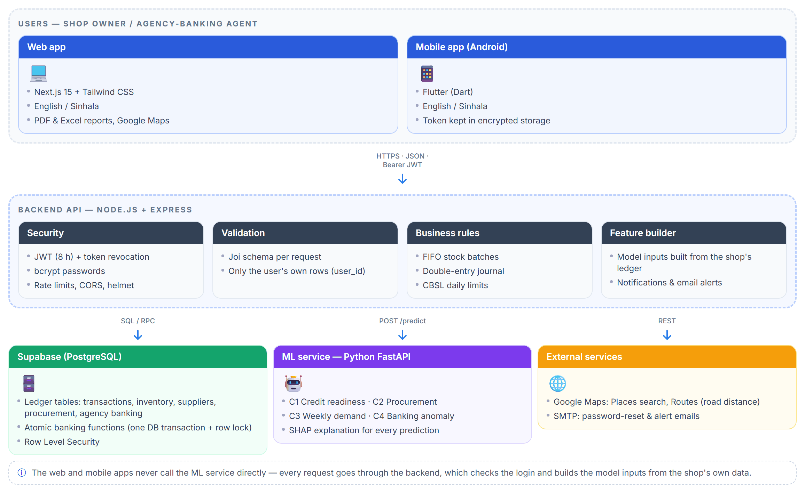
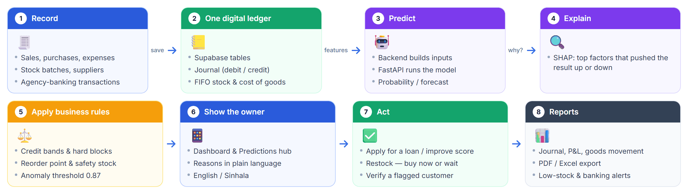
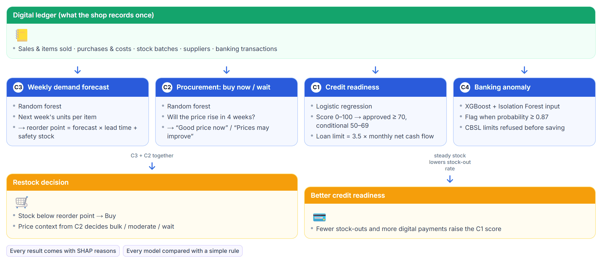
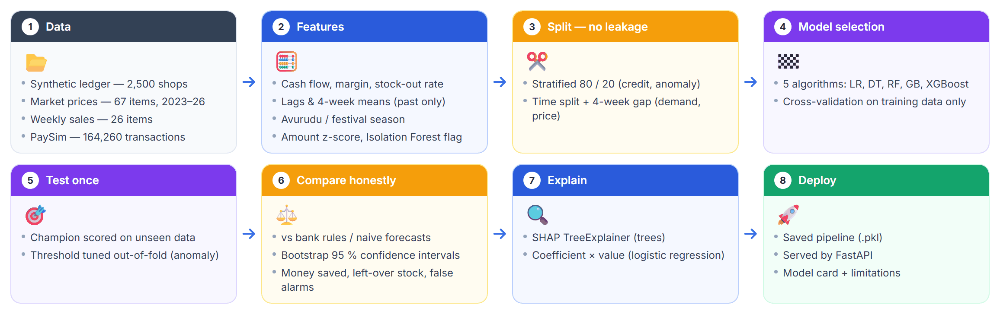
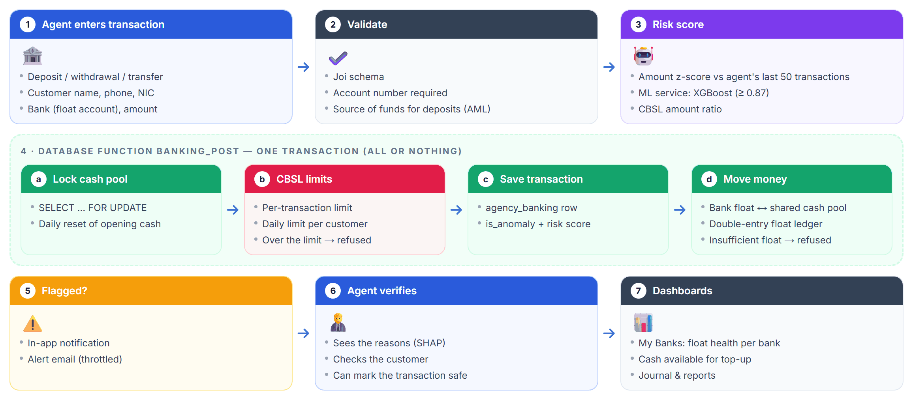
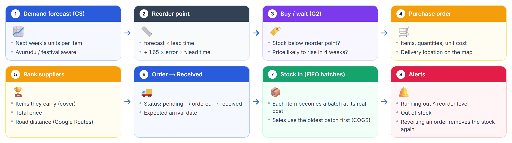

Domain Overview
Lanka-Link sits where micro-enterprise finance, retail operations and agency banking meet. The research asks whether explainable machine learning, built on a shop’s own digital records, can give rural micro-merchants decision support they can trust — and measures that honestly.
Literature Survey
Village shops are the everyday point of commerce in rural Sri Lanka. They sell groceries on credit and for cash, increasingly accept digital payments, and in many villages act as the nearest point of access to a bank through agency banking, in which a merchant performs deposits and withdrawals on behalf of a bank [1]. Yet most of these micro-merchants still keep records in exercise books [2]. Without records they cannot see their profit, control stock or show a lender that they are creditworthy; globally, a large share of micro and small enterprises are credit constrained [3], and many adults still depend on cash and on agents for financial services [4].
Machine-learning results reported in student and applied projects are often optimistic because of random splits on time-ordered data, target leakage and the absence of simple baselines [5], [6]. A second aim of this work was therefore to evaluate every model honestly: against the rule a merchant or bank would otherwise use, on data the model has not seen, with bootstrap confidence intervals [7]. The contributions are:
- an integrated, bilingual (English and Sinhala) web and Android platform in which banking, ledger, inventory and procurement data flow into each other automatically;
- four explainable models — banking anomalies, credit readiness, weekly demand and procurement timing — each compared with rule-based baselines under a common evaluation protocol;
- evidence of where machine learning adds value and where it does not, including two corrected over-estimates caused by leakage and random splitting.
Related work
Agency banking and anomaly detection. Branchless banking through retail agents extends financial services to unbanked areas but exposes agents to fraud and cash-management risk [1]. Public data on mobile-money fraud are scarce; the PaySim simulator generates realistic synthetic transactions for this purpose [8]. Gradient-boosted trees [9] and unsupervised detectors such as the Isolation Forest [10] are common, and for rare positives the precision–recall curve is more informative than ROC [11].
Credit scoring from alternative data. Credit scoring traditionally uses scorecards built with logistic regression [12]; large benchmarks show that newer classifiers sometimes improve on it, but the gains must be judged against business value [13]. Digital footprints and transaction records can predict default for applicants without a credit history [14].
Retail demand forecasting. Reviews of retail forecasting highlight calendar events and prices as key drivers [15], and the M5 competition showed that global tree-based models trained across many series outperform statistical benchmarks [16]. Forecasts should be compared with naive benchmarks and evaluated on later periods with time-based cross-validation [17], [6]. A reorder point that adds safety stock for the forecast error over the lead time is the standard way to turn a forecast into an ordering rule [18].
Procurement. Supplier selection is a multi-criteria decision in which price, delivery and availability dominate [19]. Timing purchases by market prices is a forecasting problem in which simple momentum rules are strong baselines [17]. Few works combine these with small-shop inventory and ledger data.
To our knowledge no prior system combines agency banking, bookkeeping, inventory and procurement for rural micro-merchants with models evaluated against the rules they replace.
References
- [1] G. Ivatury and I. Mas, “The early experience with branchless banking,” CGAP, Washington, DC, USA, Focus Note 46, 2008.
- [2] S. Balagobei, “Impact of record keeping practices on business performance of small and medium scale enterprises in Sri Lanka,” Int. J. Accounting and Financial Reporting, vol. 9, no. 4, 2019.
- [3] M. Bruhn, M. Hommes, M. Khanna, S. Singh, A. Sorokina and J. S. Wimpey, MSME Finance Gap: Assessment of the Shortfalls and Opportunities in Financing Micro, Small and Medium Enterprises in Emerging Markets. Washington, DC, USA: International Finance Corporation, 2017.
- [4] A. Demirgüç-Kunt, L. Klapper, D. Singer and S. Ansar, The Global Findex Database 2021: Financial Inclusion, Digital Payments, and Resilience in the Age of COVID-19. Washington, DC, USA: World Bank, 2022.
- [5] S. Kaufman, S. Rosset, C. Perlich and O. Stitelman, “Leakage in data mining: Formulation, detection, and avoidance,” ACM Trans. Knowledge Discovery from Data, vol. 6, no. 4, Art. no. 15, 2012.
- [6] C. Bergmeir and J. M. Benítez, “On the use of cross-validation for time series predictor evaluation,” Information Sciences, vol. 191, pp. 192–213, 2012.
- [7] B. Efron and R. J. Tibshirani, An Introduction to the Bootstrap. New York, NY, USA: Chapman & Hall/CRC, 1993.
- [8] E. A. Lopez-Rojas, A. Elmir and S. Axelsson, “PaySim: A financial mobile money simulator for fraud detection,” in Proc. 28th European Modeling and Simulation Symp. (EMSS), Larnaca, Cyprus, 2016.
- [9] T. Chen and C. Guestrin, “XGBoost: A scalable tree boosting system,” in Proc. 22nd ACM SIGKDD Int. Conf. Knowledge Discovery and Data Mining, 2016, pp. 785–794.
- [10] F. T. Liu, K. M. Ting and Z.-H. Zhou, “Isolation forest,” in Proc. 8th IEEE Int. Conf. Data Mining (ICDM), Pisa, Italy, 2008, pp. 413–422.
- [11] T. Saito and M. Rehmsmeier, “The precision-recall plot is more informative than the ROC plot when evaluating binary classifiers on imbalanced datasets,” PLoS ONE, vol. 10, no. 3, Art. no. e0118432, 2015.
- [12] L. C. Thomas, J. N. Crook and D. B. Edelman, Credit Scoring and Its Applications, 2nd ed. Philadelphia, PA, USA: SIAM, 2017.
- [13] S. Lessmann, B. Baesens, H.-V. Seow and L. C. Thomas, “Benchmarking state-of-the-art classification algorithms for credit scoring: An update of research,” European J. Operational Research, vol. 247, no. 1, pp. 124–136, 2015.
- [14] T. Berg, V. Burg, A. Gombović and M. Puri, “On the rise of FinTechs: Credit scoring using digital footprints,” Review of Financial Studies, vol. 33, no. 7, pp. 2845–2897, 2020.
- [15] R. Fildes, S. Ma and S. Kolassa, “Retail forecasting: Research and practice,” Int. J. Forecasting, vol. 38, no. 4, pp. 1283–1318, 2022.
- [16] S. Makridakis, E. Spiliotis and V. Assimakopoulos, “M5 accuracy competition: Results, findings, and conclusions,” Int. J. Forecasting, vol. 38, no. 4, pp. 1346–1364, 2022.
- [17] R. J. Hyndman and G. Athanasopoulos, Forecasting: Principles and Practice, 3rd ed. Melbourne, Australia: OTexts, 2021.
- [18] E. A. Silver, D. F. Pyke and D. J. Thomas, Inventory and Production Management in Supply Chains, 4th ed. Boca Raton, FL, USA: CRC Press, 2016.
- [19] C. A. Weber, J. R. Current and W. C. Benton, “Vendor selection criteria and methods,” European J. Operational Research, vol. 50, no. 1, pp. 2–18, 1991.
Research Gap
There is no single tool for rural Sri Lankan micro-merchants that connects day-to-day record keeping with credit, stock, procurement and agency-banking decisions. Existing models are mostly black boxes, ignore local factors such as the Avurudu festival season and CBSL agency-banking limits, and are rarely compared against the simple rules a shop owner or bank already uses — so it is unclear whether the machine learning adds real value.
Research Problem
How can a single digital ledger, with explainable machine-learning models built on it, help rural micro-merchants become credit-ready, keep the right stock, buy at the right time and run agency banking safely — and how much better is it than the simple rules they would otherwise follow?
Research Objectives
- Build a credit-readiness model that scores a shop from its own ledger and sets an explainable loan limit, and compare it with standard bank rules.
- Forecast weekly demand per item — including Avurudu and festival effects — and use it to set reorder points and safety stock.
- Advise whether to buy now or wait using market-price trends, and measure the money it saves on real price data.
- Detect unusual agency-banking transactions while enforcing CBSL daily limits, keeping false alarms low.
- Explain every prediction with SHAP, and deliver all four models in one web and mobile platform (English and Sinhala) through a secure backend.
Methodology
Data: a synthetic digital ledger of 2,500 shops (credit readiness), public market prices of 67 items from 2023 to 2026 (procurement), a weekly sales series of 26 items from 2022 to 2026 (demand) and 164,260 PaySim transactions adapted to agency banking (anomaly detection).
For each component five algorithms were compared — logistic regression, decision tree, random forest, gradient boosting and XGBoost. The model is chosen by cross-validation on the training data only (time-based expanding-window validation for the time-series models) and tested once on unseen data; time-series models are tested on future weeks with a gap so no future information leaks in.
Every model is compared with simple rules or naive forecasts, with bootstrap 95 % confidence intervals, and turned into practical terms (money saved, left-over stock, false alarms per 1,000 customers). SHAP explains each prediction. The models run in a Python FastAPI service behind a Node.js backend that checks the login and builds the inputs from the shop’s own data, used by a Next.js web app and a Flutter mobile app.
System Diagrams
Click a diagram to open it full size.





